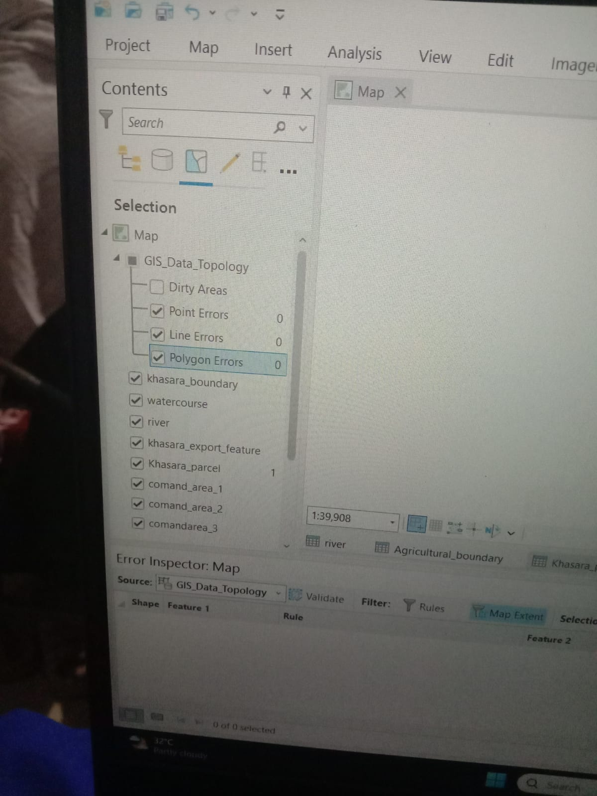

About Me
I have 1.8 years of experience in Quality Control with strong skills in data validation and accuracy. I have transitioned into GIS with hands-on experience in ArcGIS Pro, focusing on cadastral mapping, parcel digitization, and topology validation.
Project: Cadastral Mapping & Topology Validation (Khasra Parcel Project)
Performed cadastral mapping using ArcGIS Pro, including georeferencing and digitization of parcel boundaries, rivers, water courses, and command areas. Conducted topology validation to identify and correct overlaps and gaps, ensuring spatial accuracy, and generated final layout maps.
- Digitized cadastral parcel boundaries
- Mapped rivers, water courses, and command areas
- Assigned Khasra numbers and attributes
- Performed topology validation
- Corrected overlaps and gaps
- Generated final layout map
Before & After


Error Identification & Correction
Initial dataset contained topology errors such as overlaps and gaps. These were identified and corrected using topology rules in ArcGIS Pro to ensure spatial accuracy.
Real-World Application
This project demonstrates cadastral mapping and topology validation concepts applicable in land record management, urban planning, and infrastructure development.
Skills
ArcGIS Pro, ArcMap, QGIS
Cadastral Mapping, Topology Validation, GIS QC
Spatial Data Handling, Basic Analysis
Remote Sensing (Basic), Drone (Basic)